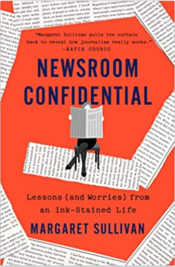

Democratie heeft een ondergrond nodig om op te staan-en die ondergrond is de waarheid (Jamie Raskin).
In de zestiger en zeventiger jaren was er volop vertrouwen in wat er op de voorpagina’s van de kranten stond. Het ging over de oorlog in Vietnam, de tweede feministische golf, burgerrechtenprotesten, de aanslagen op de Kennedy-broers en die van M.L. King. Ook bij Margaret Sullivan thuis in Buffalo werd de krant goed gelezen en het was vooral het nieuws over het Watergate-schandaal dat Margaret Sullivan op de voet volgde. In haar mooi journalistieke memoires Newsroom Confidential: Lessons (and Worries) from an Ink-Stained life gaat ze hier uitgebreid op in. Het waren de stoere Washington Post-journalisten Woodward en Bernstein en het moedige optreden van de zwarte politica Barbara Jordan in deze zaak die een blijvende indruk op Sullivan maakten. Met lezen, woorden, weten wat er om je heen gebeurt en communiceren had ze veel op en ze koos daarom voor de journalistiek. Ze ging werken voor de Niagara Gazette en niet veel later voor de Buffalo News waar ze dertig jaar voor werkt. Daar valt ze op met creatief denken en risico’s durven nemen en klimt op tot een van de weinige vrouwelijke hoofdredacteuren in Amerika. Ze heeft in haar boek aandacht voor enkele successen (zoals het winnen van prijzen), net zo goed als voor enkele fouten (te veel nadruk leggen op criminele achtergronden van de slachtoffers) want van zeges en blunders leren we, zo schrijft ze hierover met Goethe.
Sullivan wordt in 2012 door de New York Times gevraagd of ze de eerste vrouwelijke publieke redacteur wil worden. De functie was in het leven geroepen om vanuit een onafhankelijke positie te schrijven over niet alleen wat de krant moet publiceren maar ook hoe de krant zich ten opzichte van hen heeft op te stellen. Bij die krant krijgt ze te maken met de grote groep eigenwijze redacteuren en vele lezers die haar op allerlei manieren mailen en appen. In de positie merkt ze ook heel duidelijk dat er in de samenleving anders over nieuws wordt gedacht en dat het vertrouwen daarin afneemt. Het is volgens haar begonnen met de desastreuze Irak-oorlog toen er vanuit de overheid de nodige misinformatie werd verspreid en kranten steeds vaker werden verdacht. De kranten op hun beurt onderzoeken de situatie in Irak onvoldoende. Sullivan laat weten dat de verhalen van de NYT op onnauwkeurige informatie en naamloze bronnen zijn gebaseerd en met die stellingname maakt ze zichzelf bij de krant niet heel erg populair. Die slechte gewoonten van de krant moeten worden aangepast om het publieke vertrouwen weer terug te winnen. Heel duidelijk wordt dit alles in 2016, het verkiezingsjaar. Iedereen denkt dat Hillary Clinton de verkiezingen wel gaat winnen. Daar is men bij de NYT ook van overtuigd en daarom denkt de krant haar heel kritisch te kunnen volgen dat jaar. Dat kritisch volgen wordt volgens Sullivan een obsessie. De krant komt met het nieuws over de e-mails die Clinton via haar eigen computer zou hebben verstuurd. Een keer op straat krijg je dit soort verhalen niet meer in de fles. Iedereen gaat daar volop over schrijven en dat leidt er toe dat Trump het op een gegeven moment heeft over ‘Sluit haar op’. Een week voor de verkiezingen wordt het allemaal nog erger als de FBI het over ‘honderden/duizenden’ e-mails heeft. Deze hele zaak is volgens Sullivan behoorlijk opgeklopt door de media, andere belangrijke zaken (zoals de rol van Rusland bij deze verkiezingen) krijgen daarentegen te weinig aandacht. Hoe de kranten hier in deze tijd mee omgaan is natuurlijk niet het enige dat ervoor zorgt dat Trump de verkiezingen wint, het heeft er volgens Sullivan allemaal wel degelijk aan bijgedragen. Onderzoek toont de fout van Clinton later aan maar het blijkt ook weer niet zo’n grote zaak te zijn geweest. Dan is het allang geen voorpaginanieuws meer. In het verkiezingsjaar zelf stapt Sullivan over naar de Washington Post waar ze weer gewoon als journalist gaat werken. Daar merkt ze hoe donker journalistiek en de hele nationale politiek zijn geworden. Ze is eerst op zoek naar haar eigen geluid. Zij gaat staan voor kwaliteit en het belang van goede journalistiek in een democratie. Trump is natuurlijk die abnormale presidentskandidaat en latere president en de media weten niet goed hoe ze zich tegenover hem moeten opstellen. Het is voor Sullivan duidelijk dat de journalistiek beter moet worden, moediger en sterker ook. Ze reist stad en land af om erachter te komen waarom het vertrouwen in de media is verdwenen en mensen het zijn gaan zien als een poppenkast. Het land is totaal versplinterd en de feiten worden niet meer als feiten gezien. Het zijn Ailes, Murdoch en vooral Fox News, met z’n schaamteloze propaganda voor Trump, die hierbij een centrale rol hebben gespeeld. Het land radicaliseert verder en het vergiftigde mediasysteem met het afschuwelijke ‘nieuws’ dat mensen dagelijks voorgeschoteld krijgen leiden tot de bestorming van het Capitool 6 januari 2021.
Voor Sullivan zijn waarheid, vertrouwen en objectiviteit sterk met elkaar verbonden en die hebben elkaar nodig. Maar daar is weinig van over. Nu de moderne democratie in crisis verkeert wil ze die eenheid herstellen. Democratie heeft media nodig en media op hun beurt moeten de democratie verdedigen door leugens en samenzweringstheorieën te weerleggen. Gewoon je werk doen is in deze tijd niet meer genoeg voor een journalist. De democratie is in gevaar als verkiezingsuitslagen niet meer geloofd worden, deelname aan verkiezingen onder druk komen te staan en er sprake is van sterke polarisatie. In alles straalt Sullivan de onpartijdige en onafhankelijke journalist uit die plezier heeft in wat ze doet. Dat maakt dit boek zo inspirerend en belangrijk.

Sullivan, M. (2022). Newsroom confidential. Lessons (and worries) from an ink-stained life. New York, St. Martin’s Press.